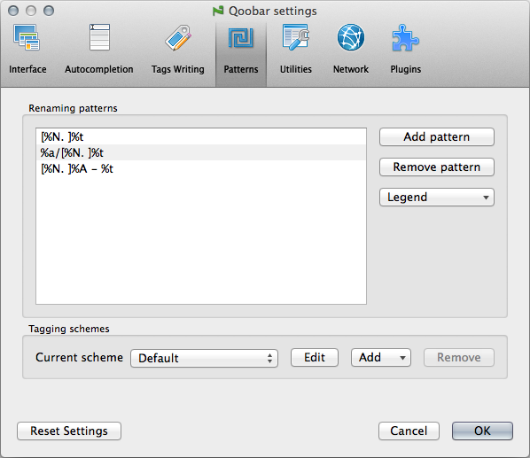
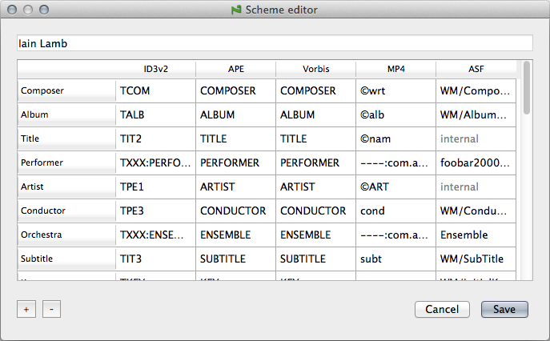

Patterns

- Renaming patterns - here you can edit the list of patterns used when you rename files.
Tagging schemes - here you can choose which scheme to use for tags reading and writing. There are one default scheme (you cannot edit or delete this scheme, but only clone it) and 4 more schemes, which you can change: Tag&Rename, Mp3tag, Iain Lamb's scheme, Musicbrainz Picard.
You can edit scheme, clone or remove it (except for the default one). If you click on the button, a dialog will appear:
You can change the scheme name in the first line. The table sets the correspondence between Qoobar tags and various fields for 5 tag formats. If you want to set several fields for one tag, simply separate them by semicolon, f.e. in the default scheme the tag "Total tracks" are written into APE files into 3 different fields:
TOTALTRACKS;TRACKNUMBER;TRACKTOTAL.If you set the same field for "Track number" and "Total tracks" tags, f.e.
TRACKNUMBER, the resulting field value will be written as "track_number/total_tracks", and vice versa, when reading the fieldTRACKNUMBERwith the value "02/10" it will be parsed as "Track number=02", "Total tracks=10".You can add your own tag(s) to the scheme. This tag will constantly be visible in the Tags Table, although the Files Table don't show custom tags.
- Click the button.
- Change the tag name by double-clicking on the row name. This name will be used in the Tags Table.
Note: This name will not be localized, but you can type your own localized name.
- Set fields for all five tag formats. Please note the peculiarities in the paragraph below.
Example: Let's add the "File Owner" tag. First click on . Then double-click on the row name and input
File Owner. Next fill in the fields:TOWNin the ID3v2 cell (this is the standard field listed in the ID3v2 specification, so no "TXXX:" prefix needed),----:com.apple.iTunes:FILEOWNERin the MP4 cell, andFILEOWNERin the other cells. Click .If you want to remove some tag from the scheme, click on any field on the tag row and then click . Removing of standard tags (that is Composer through ISRC) is not supported. If you want to remove them, simply hide them by choosing the "Show/hide tags..." option in the Tags Table context menu.
Note: Please if possible restart Qoobar so the scheme changes can fully be applied.
There are some peculiarities for ID3v2, Asf and Mp4 formats:
- ID3v2: Use prefix
TXXX:for non-standard text fields,WXXX:for non-standard web URLs, andCOMM:for custom comments. You can also use all text fields listed in the ID3v2.3/4 specification. - Mp4: Use prefix
----:com.apple.iTunes:for your non-standard fields. The grayed internal fields are handled internally by Qoobar and cannot be changed. - Asf: The grayed internal fields are handled internally by Qoobar and cannot be changed.
© 2009-2016 Alex Novichkov